Chapter 01
The app at a glance
The rebuild ships as a native desktop app with the same brutalist dark shell as the TypeScript original: a 40 px title bar with a live proxy chip, a 232 px sidebar, a breadcrumb header and a rounded content card. The landing page mirrors the web app’s hero — a big centered composer with Image / Chat mode chips, so the very first thing you can do is type. No API key, no login, no configuration: the app ships pointed at the local artcraft-proxy bridge, and the header dot turns green the moment real models answer.
Home — hero composer with Image / Chat chipsStatus cards: online · live · zai-bridge
Using the app is a three-move loop, and this document walks through all three with real captures:
Brainstorm with the Assistant — describe what you want; GLM-4.6 returns a polished, ready-to-paste image prompt.
Craft it in the Image studio — paste or type a prompt into the always-visible bottom composer; CogView-4 paints it and the result lands in the feed.
Review and keep — open the lightbox for a full-size look; every image is auto-saved to the Library on disk.
Chapter 02
Step 1 — brainstorm with GLM-4.6
The Assistant page keeps the composer docked at the bottom — Enter sends, Shift+Enter breaks a line, and sessions are stored by the proxy with full history every turn. The first ask was deliberately open: “Give me one polished image prompt: a lighthouse on a cliff at dawn, watercolor style.” GLM answered with a single, production-ready prompt — no meta-commentary, nothing to strip out.
User · sent from the docked composer
Give me one polished image prompt: a lighthouse on a cliff at dawn, watercolor style
ArtCraft Assistant · GLM-4.6 · live
“A solitary lighthouse perched on rugged seaside cliffs at dawn, soft pastel watercolor washes blending with gentle brushstrokes, mist rising from the ocean below, warm golden light breaking through clouds, serene and ethereal atmosphere.”
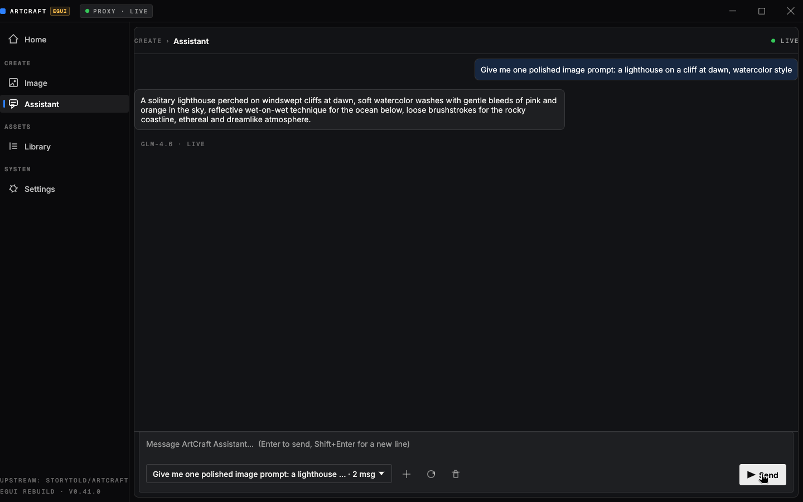
Assistant — real GLM-4.6 reply, bubble hugs the textSession picker: 2 msg · live
A second question doubled as a smoke test: “Explain in two sentences how the image studio works in this app.” The reply wrapped cleanly inside its bubble and demonstrated that the assistant knows its own host — useful when a painter asks “what can this studio do?” mid-session. Long replies never run off the window; bubbles cap at 72 % of the row width and hug their text.
Chapter 03
Step 2 — CogView-4 paints it
GLM’s prompt went straight into the Image studio composer — typed exactly as the assistant wrote it, no edits. The Generate button (or just Enter) fired the request through the Rust proxy to CogView-4; about a minute later the painting appeared at the top of the feed with its model and size caption, and a toast confirmed it was saved to the Library.
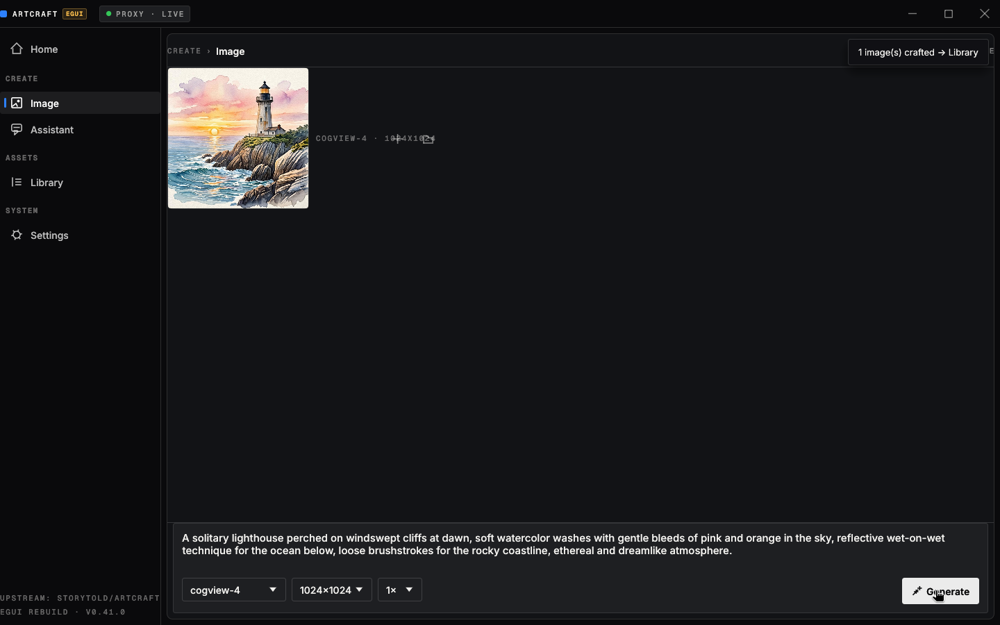
Image studio — GLM’s prompt in the docked composer“1 image(s) crafted → Library” toast
Prompt P1 · typed on the Home hero · became the studio painting
a painters studio at golden hour, oil on canvas style, warm light through tall windows, brushes and easels, soft shadows, high quality, detailed
Prompt P2 · written by GLM-4.6 · painted by CogView-4
A solitary lighthouse perched on windswept cliffs at dawn, soft watercolor washes with gentle bleeds of pink and orange in the sky, reflective wet-on-wet technique for the ocean below, loose brushstrokes for the rocky coastline, ethereal and dreamlike atmosphere.
Chapter 04
Step 3 — lightbox & library
Clicking any tile opens the lightbox: the artwork at full size on a dimmed backdrop, with its caption (prompt prefix · model · size) and a Reveal in Explorer shortcut to the file on disk. Escape closes it. The Library page lists every generated image with its prompt, model and size, and persists across restarts via artcraft-data/library.json.
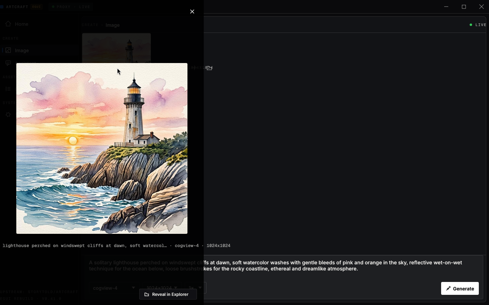
Lightbox — full-size reviewcogview-4 · 1024x1024
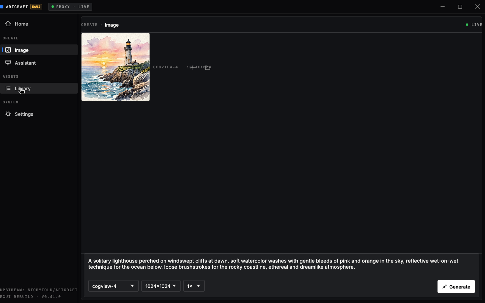
Library — every crafted image, on diskartcraft-data/generated
Chapter 05
Second pass — pixel art iteration
The design loop was run a second time with a different style to prove iteration: select-all, retype, generate. The pixel-art prompt below was typed into the composer (visible mid-edit in the capture) and CogView-4 rendered the cozy isometric studio — warm lamp glow, the sleeping cat on the canvas, 16-bit palette — in about 55 seconds.
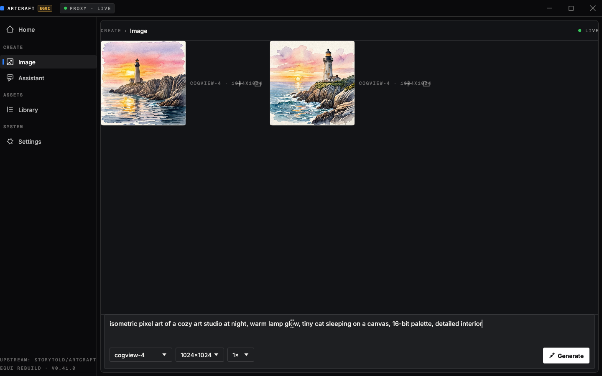
Iteration — new prompt typed into the same composermodel · size · count pickers below
Prompt P3 · typed for the second pass
isometric pixel art of a cozy art studio at night, warm lamp glow, tiny cat sleeping on a canvas, 16-bit palette, detailed interior
Honest iteration note
One earlier attempt typed a fresh prompt without clearing the composer, and the caret landed mid-text — the request concatenated the lighthouse and pixel-art prompts. The model happily blended them into a calmer lighthouse at sunset (kept in the gallery as a happy accident). The app itself behaved correctly; the lesson is compositional, not architectural: clear the box, or reuse a previous prompt deliberately via the tile’s Reuse prompt button.
Chapter 06
The gallery
All four artworks produced during this session, exactly as saved by the app to artcraft-data/generated/. Every image was generated live by CogView-4 through the proxy bridge during the GUI test run — none are mockups or placeholders.
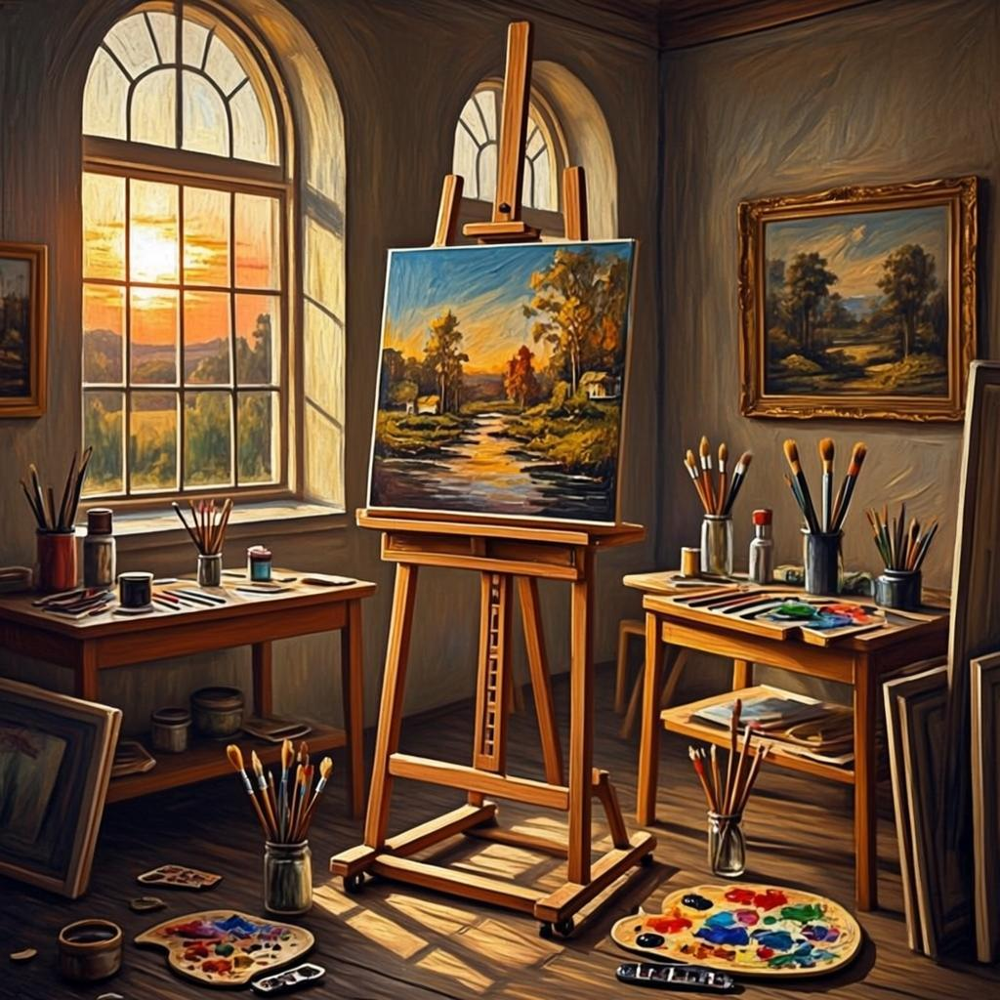
01 · Painter’s studio, golden hour — prompt P1
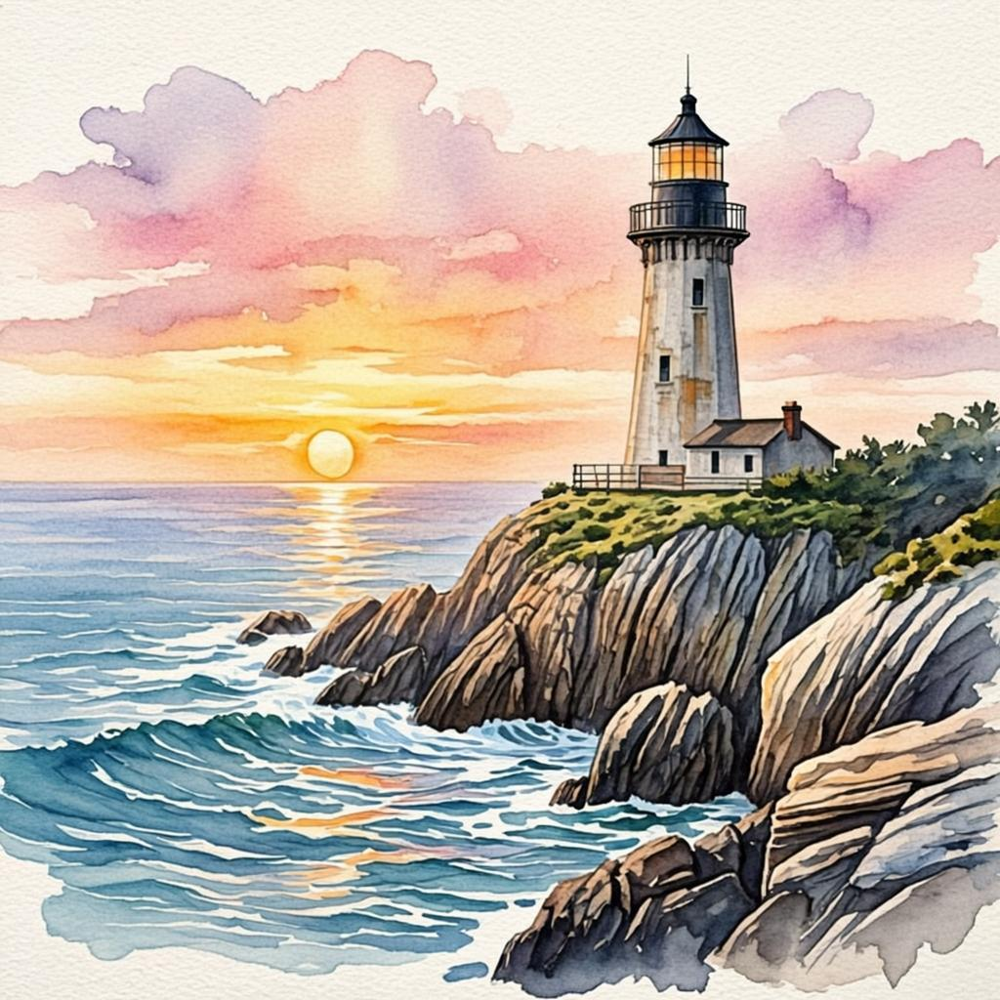
02 · Lighthouse watercolor — prompt P2
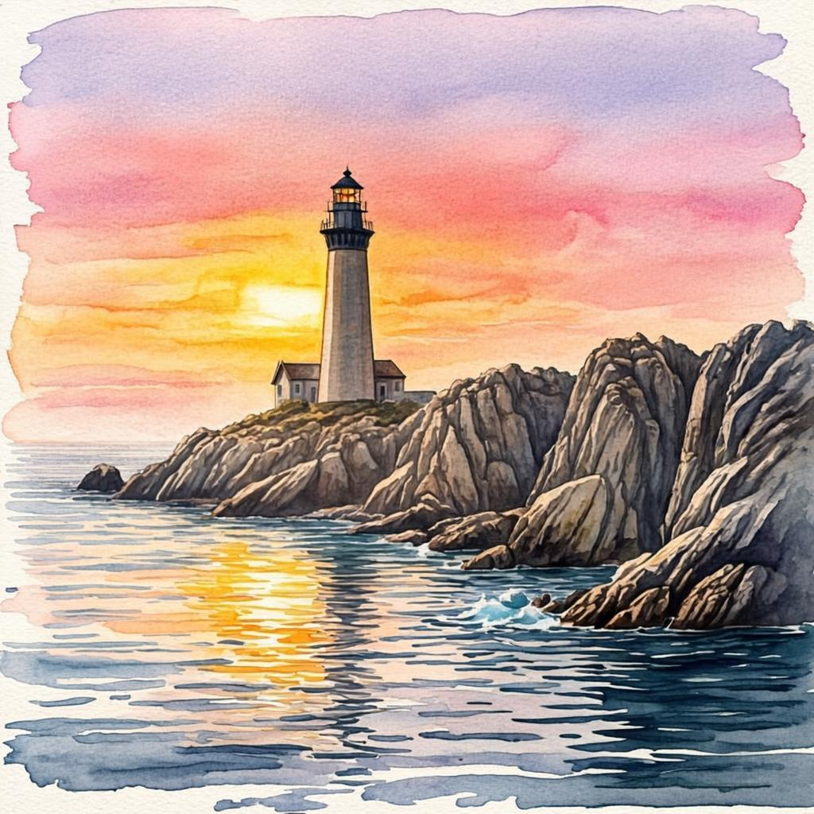
03 · Blended-prompt lighthouse — the honest accident
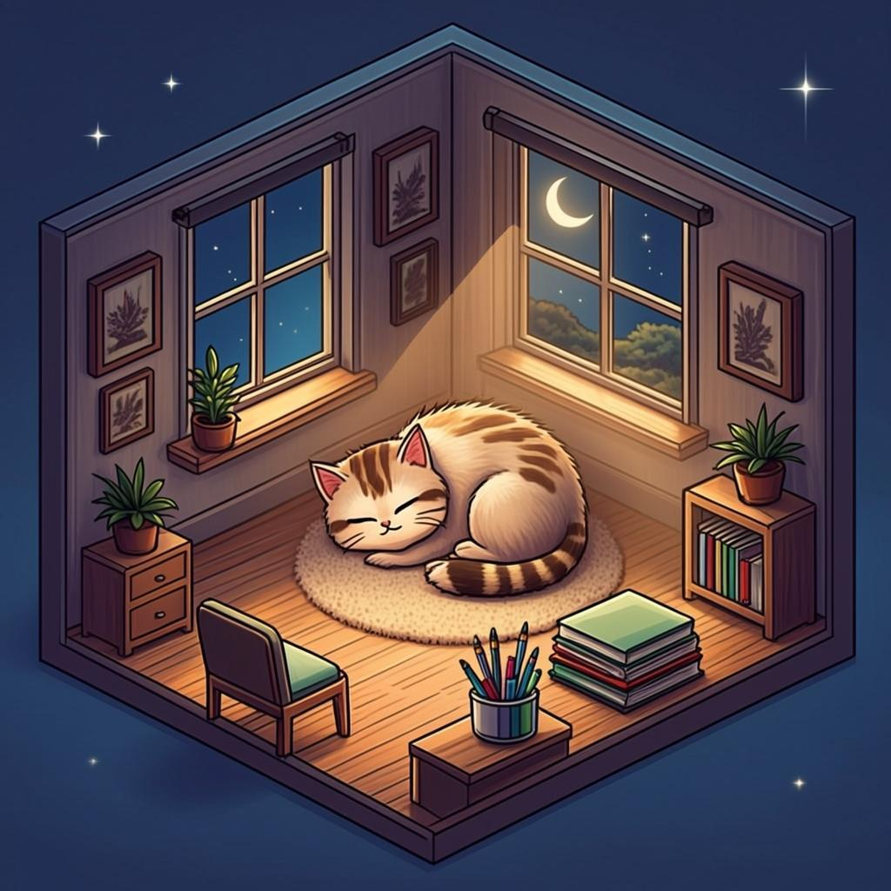
04 · Pixel-art studio with cat — prompt P3
Chapter 07
Zero-key architecture, proven live
Neither the desktop app nor the Rust proxy ever holds a credential. Two live backends were verified during this run: the local artcraft-proxy on 127.0.0.1:8787 (which relays model calls to a server-side ZAI bridge), and the hosted backend reached by simply pasting a URL into Settings — the exact flow a Windows user repeats with the preview URL. The settings readout shows the truth in green: mode live, and the API key row reads “none — held server-side by the ZAI bridge”.
ArtCraft (egui)
Settings → Proxy URL. Only a URL ever reaches the app.
artcraft-proxy
Rust · sessions, chat & image endpoints on 127.0.0.1:8787.
ZAI bridge
Holds the credential; GLM-4.6 + CogView-4 answer here.
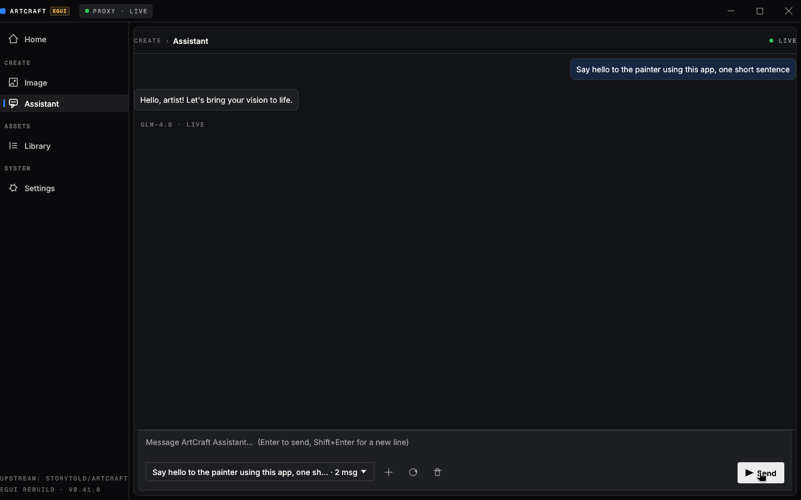
Paste-URL flow — fresh session on the hosted backend“Hello, artist! Let’s bring your vision to life.”
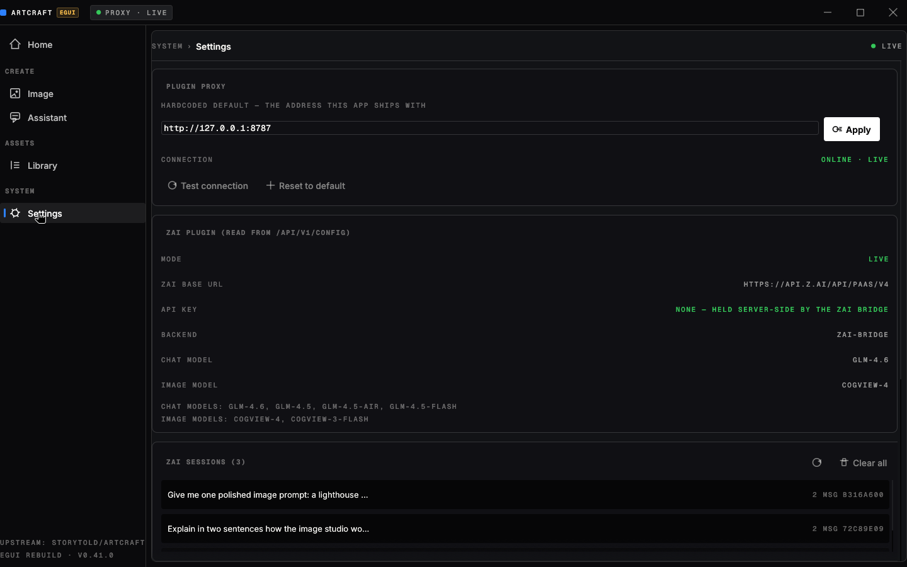
Settings — live mode, no key on this machinebackend: zai-bridge · glm-4.6 · cogview-4
The app also self-heals across backends: switching the Proxy URL drops the stale session id, and if a session ever vanishes the next message recreates it transparently. That single detail is what makes “paste a URL and go” trustworthy rather than fragile.
Chapter 08
Every prompt in this log
The complete, unabridged set of prompts and messages that produced this document — typed by hand or returned by GLM-4.6, all executed against live models.
P1 · Human · Home hero composer · → studio painting
a painters studio at golden hour, oil on canvas style, warm light through tall windows, brushes and easels, soft shadows, high quality, detailed
C1 · Human · Assistant
Give me one polished image prompt: a lighthouse on a cliff at dawn, watercolor style
P2 · GLM-4.6 reply to C1 · → watercolor lighthouse
A solitary lighthouse perched on rugged seaside cliffs at dawn, soft pastel watercolor washes blending with gentle brushstrokes, mist rising from the ocean below, warm golden light breaking through clouds, serene and ethereal atmosphere.
P2′ · GLM-4.6 · second session variant of the lighthouse prompt
A solitary lighthouse perched on windswept cliffs at dawn, soft watercolor washes with gentle bleeds of pink and orange in the sky, reflective wet-on-wet technique for the ocean below, loose brushstrokes for the rocky coastline, ethereal and dreamlike atmosphere.
C2 · Human · Assistant smoke test
Explain in two sentences how the image studio works in this app
C3 · Human · Assistant (hosted backend)
Say hello to the painter using this app, one short sentence
P3 · Human · Image studio · → pixel-art studio
isometric pixel art of a cozy art studio at night, warm lamp glow, tiny cat sleeping on a canvas, 16-bit palette, detailed interior